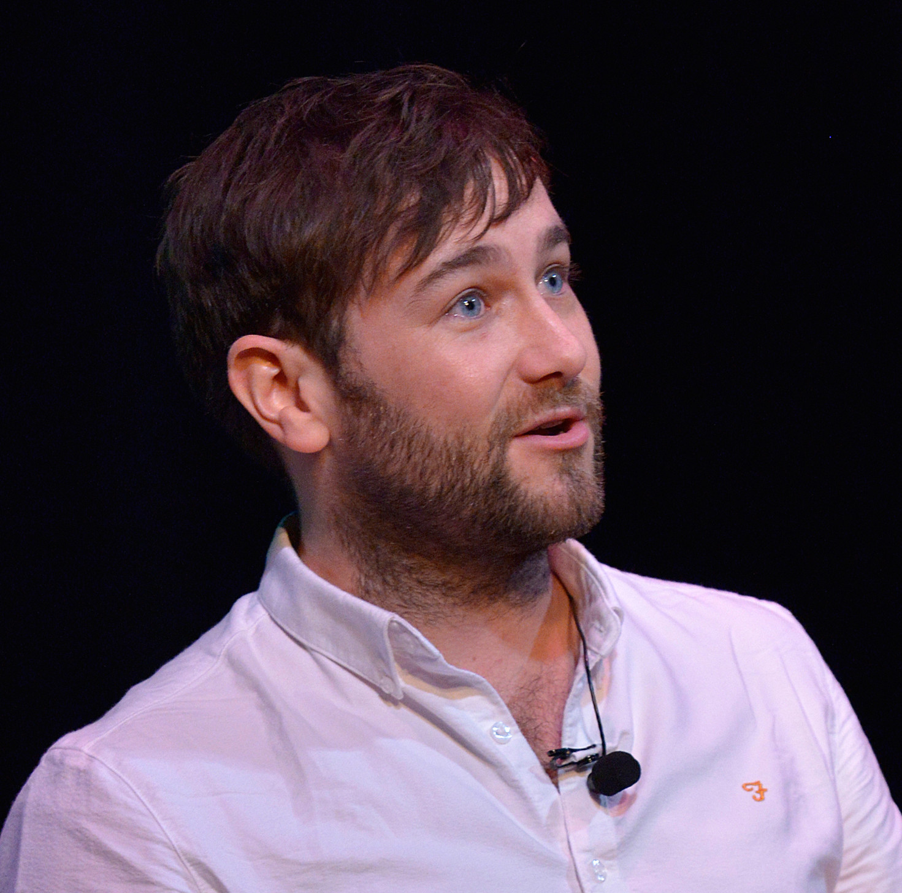
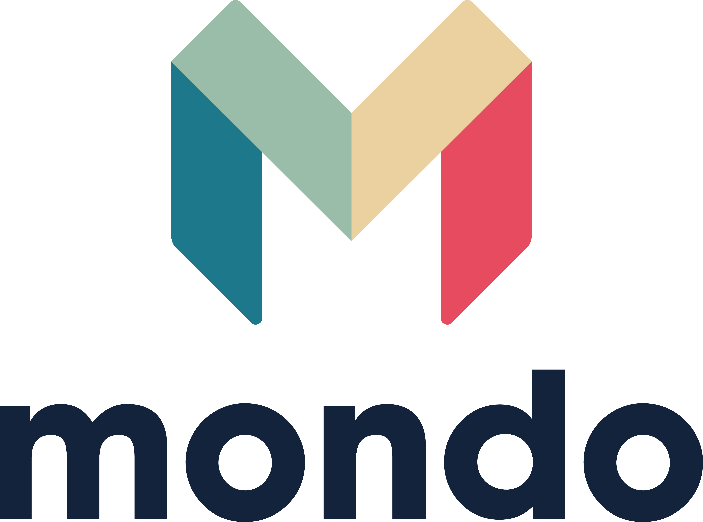
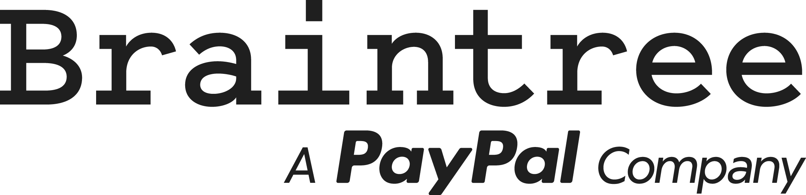
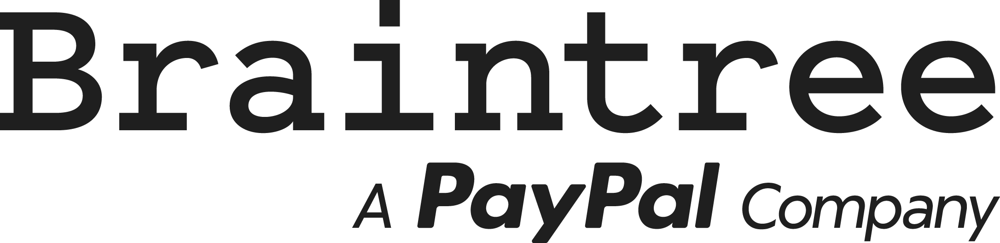
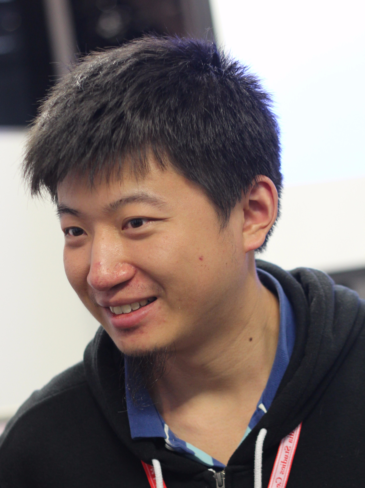
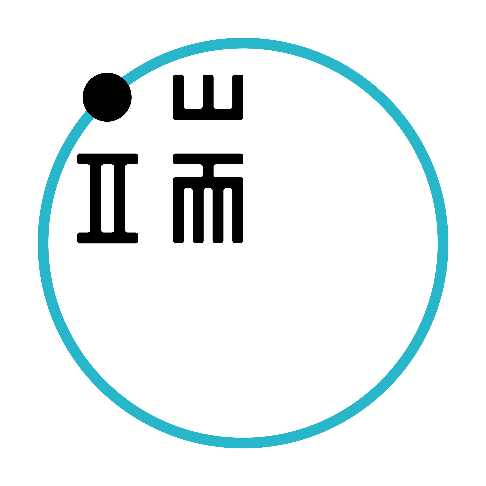
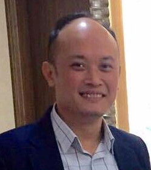
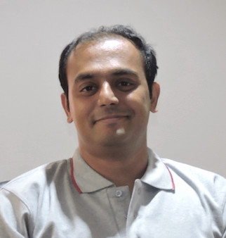
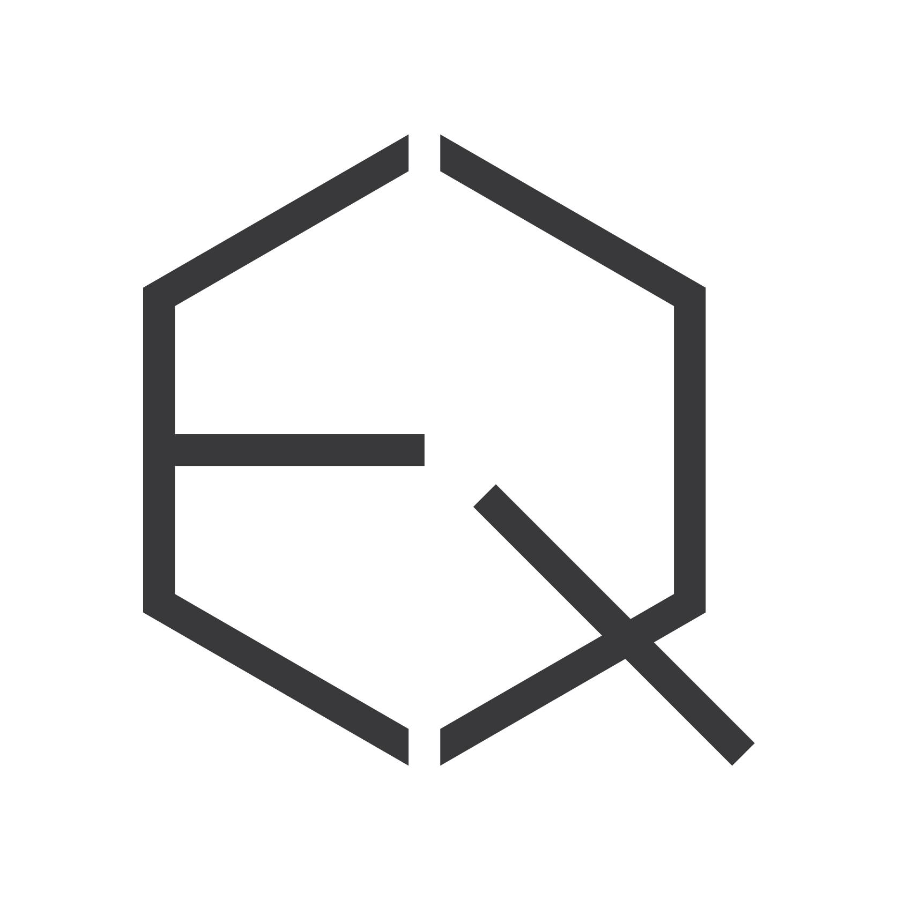

Get connected with the greatest minds in the industry with the latest Internet development, news, various development platform techniques, hints and tips. Prominent speakers around the world are coming all together with motivating and inspirational talks and workshops. Hundreds of developers will gather at the summit to meet, learn and exchange experiences and ideas on different development platform / environment.
The event will be divided into two tracks: main track conference and parallel track workshops and seminar. While main track conference will consist of international tech companies presenting state of the art technologies and experience sharing, parallel track seminars and workshops will provide a two way communication platform for local developers to obtain hands-on experience in small groups.
World Internet Developer Summit 2016
Date: 7 - 8 Jun 2016
Venue: Cyberport
Keynote: Supporting Dynamic Growth with Elasticsearch Architecture
Elastic

Christian Strzadala
Software Engineer, Elastic
Experience includes developing high performance commercial applications for businesses in both client and server environments and large scale web applications. Experience working within an Agile development team utilizing SCRUM based practices and Test-Driven Development in application development.
Keynote: DevOps at Scale: A True Story
Microsoft

Andy Cheung
Partner Business Evangelist, Microsoft Hong Kong
DevOps represents a transformational shift in the way the software industry produces and delivers software. While the benefits are many, the road to DevOps for an established organization can be a long one filled with surprises and challenges. Microsoft’s Developer Division, has been on a multi-year journey to become more agile and accelerate from shipping once every two years to shipping multiple times per year in a true DevOps fashion. This session will provide insights into the changes and investments made along the way, demonstrations of how the team makes use of Visual Studio Team Services to manage their software development projects, and practical lessons you can apply to your own team’s journey.
Keynote: DevOps at Scale: A True Story
DBTek

Davide Benvegnu
Founder & CTO, DBTek
DevOps represents a transformational shift in the way the software industry produces and delivers software. While the benefits are many, the road to DevOps for an established organization can be a long one filled with surprises and challenges. Microsoft’s Developer Division, has been on a multi-year journey to become more agile and accelerate from shipping once every two years to shipping multiple times per year in a true DevOps fashion. This session will provide insights into the changes and investments made along the way, demonstrations of how the team makes use of Visual Studio Team Services to manage their software development projects, and practical lessons you can apply to your own team’s journey.
Keynote: Building Microservices Architectures in Go
Mondo


Matt Heath
Distributed Systems Engineer, Mondo
Delivery focused full stack engineer, specialising in highly available distributed systems and cloud based infrastructure and automation, with comprehensive web development skills and experience.
Seminar: "Microsoft Cognitive Services: Give Your Apps a Human Side"
Additive Labs
Thomas Weiss
Founder, Additive Labs
Working in the software industry for more than 10 years now. After having lead the Asian Professional Services team for the world's augmented reality leader, I've founded a consulting company in Hong Kong focusing on Microsoft technologies, and also launched an augmented reality B2B platform, Stampeo.
Seminar: The Social Science of Internet
Journalism & Media Studies Centre, HKU
陳電鋸
Chung-Hong Chan
PhD candidate, Journalism & Media Studies Centre, HKU
Chung-hong "Chainsaw" Chan is a PhD candidate at the Journalism and Media Studies, the University of Hong Kong with a strong interest in computational social science. This talk is about the social science of the internet and why it matters.
Seminar: The 5 Pitfalls of Payment Integration: What to Avoid When Integrating Payments
Braintree
 

Tim Yu
Lead Sales Engineer, APAC, Braintree
Seminar: Data in a New Media
Initium Media


Pili Hu
CTO, Initium Media
Seminar: "Lessons of Building a SaaS Engineering Team in Hong Kong"
S Loyalty
William Chan
Co-founder, S Loyalty
Seminar: "The End of Rails - The Illusion of Stable APIs"
TRB, INC
Nick Sutterer
Ruby Architect, TRB, INC
10 years experience
Ruby architecture and component-oriented system design, refactoring, Rails, gem development.
Seminar: The future of EV and Tesla Technology
Tesla

Kenneth Lui
Head of Sales, Hong Kong & Macau, Tesla
Specialties:Hong Kong SFC licensed.
Seminar: Gamifying Open Source
Josh Software, India


Gautam Rege
Co-founder, Josh Software, India
The Ruby On Rails specialists from India.
Seminar: Mobile Network Insecurities
Chaos Computer Club
Linus Neumann
Computer Hacker & Internet Activist, Spokesperson, Chaos Computer Club, Germany
Senior IT Security Consultant
Workshop: Learning Go, on the Go (Go)
Josh Software, India
Gautam Rege
Co-founder, Josh Software, India
The Ruby On Rails specialists from India.
Workshop: Trailblazer Programming Workshop (Ruby)
TRB, INC
Nick Sutterer
Ruby Architect, TRB, INC
10 years experience
Ruby architecture and component-oriented system design, refactoring, Rails, gem development.
Workshop: Building Facebook Bot in Python (Bot)
Python Developer
Ho Wa Wong
Python Developer
Backend Engineer at PLAYSTUDIOS ASIA
Workshop: Rapid Prototyping with FramerJS (Prototyping)
EONIQ

Charles Wong
Co-Founder & Software Product Lead, EONIQ
Workshop: Docker 101 (Data-science)
Initium Media
Chunliang Lyu
Software Engineer, Initium Media
Sponsorship Opportunity
Connect with your target audience by sponsoring the World Internet Developers Summit.
Sponsors can choose from many levels of sponsorship options. For more information,
please contact us at sec@isoc.hk.
Date: 7 – 8 Jun, 2016 (Tue – Wed)
Venue:
Cyberport (Function Room & Training Room 1-3, L3, Core F, Cyberport 3, 100 Cyberport, Hong Kong) (map)
Route Information – Download PDF
| 7 June |
Cyberport |
| 9:30 – 10:00 |
Registration Starts, Networking and Exhibition
|
| 10:00 – 10:20 |
Opening Ceremony
|
| 10:20 – 11:10 |
(K1) Keynote Session
Topic: Supporting Dynamic Growth with Elasticsearch Architecture
Speaker:
Christian Strzadala, Software Engineer, Elastic
|
| 11:10 – 12:00 |
(K2) Keynote Session
Topic: DevOps at Scale: A True Story
Speakers:
Andy Cheung, Partner Business Evangelist, Microsoft Hong Kong
Davide Benvegnu, Director & CTO, DBTek
|
| 12:00 – 12:30 |
Panel Discussion
|
| 12:30 – 13:30 |
Lunch and Networking
|
| 13:30 – 14:20 |
(K3) Keynote Session
Topic: Building Microservices Architectures in Go
Speaker:
Matt Heath, Distributed Systems Engineer, Mondo
|
|
|
Function Room |
Training Room 1 |
| 14:20 – 15:00 |
(A1) Seminar Session
Topic: Microsoft Cognitive Services: Give Your Apps a Human Side
Speaker:
Thomas Weiss, Founder, Additive Labs
|
(B1) Seminar Session
Topic: The Social Science of Internet
Speaker:
陳電鋸 Chung-Hong Chan, PhD candidate, Journalism & Media Studies Centre, HKU
|
| 15:00 – 15:40 |
(A2) Seminar Session
Topic: The 5 Pitfalls of Payment Integration: What to Avoid When Integrating Payments
Speaker:
Tim Yu, Lead Sales Engineer, APAC Braintree
|
(B2) Seminar Session
Topic: Data in a New Media
Speaker: Pili Hu, CTO, Initium Media
|
| 15:40 – 16:00 |
Coffee/Tea Break
|
| 16:00 – 16:40 |
(A3) Seminar Session
Topic: Lessons of Building a SaaS Engineering Team in Hong Kong
Speaker:
William Chan, Co-Founder, S Loyalty
|
(B3) Seminar Session
Topic: The End of Rails - The Illusion of Stable APIs
Speaker:
Nick Sutterer, Ruby Architect,TRB, INC
|
| 16:40 – 17:20 |
(A4) Seminar Session
Topic: The future of EV and Tesla Technology
Speaker:
Kenneth Lui, Head for Sales, Hong Kong & Macau, Tesla
|
(B4) Seminar Session
Gamifying Open Source
Speaker:
Gautam Rege, Co-founder, Josh Software, India
|
| 17:20 – 18:00 |
(A5) Seminar Session
Topic: Mobile Network Insecurities
Speaker:
Linus Neumann, Computer Hacker & Internet Activist, Spokesperson, Chaos Computer Club, Germany
|
|
| 18:00 |
Exhibition & Networking Ends
|
| 8 June |
Cyberport |
| Workshop |
|
Training Room 1 |
Training Room 2 |
| 09:30 – 10:00 |
Registration Starts, Networking and Exhibition
|
| 10:00 – 11:30 |
(W2) Workshop
Topic: Learning Go, on the Go (Go)
Speaker:
Gautam Rege, Co-founder, Josh Software, India
|
(W1) Workshop
Topic: Trailblazer Programming Workshop (Ruby)
Speaker:
Nick Sutterer, Ruby Architect,TRB, INC
|
| 11:45 – 13:15 |
(W3) Workshop
Topic: Building Facebook Bot in Python (Bot)
Speaker:
Ho Wa Wong, Python Developer
|
(W1) Workshop
Topic: Trailblazer Programming Workshop (Ruby)
Speaker:
Nick Sutterer, Ruby Architect,TRB, INC
|
| 13:30 – 14:30 |
Lunch & Networking
|
| 14:30 – 16:00 |
(W4) Workshop
Topic: Rapid Prototyping with FramerJS (Prototyping)
Speaker:
Charles Wong, Co-Founder & Software Product Lead, EONIQ
|
|
| 16:00 – 16:30 |
Coffee/Tea Break
|
| 16:30 – 18:00 |
(W5) Workshop
Topic: Docker 101 (Data-science)
Speaker:
Chunliang Lyu, Software Engineer, Initium Media
|
|
| 18:00 |
Exhibition & Networking Ends
|
NOTE: The above agenda is subject to change and without prior notice.
NOTE: The majority of all sessions will be conducted in English.
NOTE: Internet Society Hong Kong (ISOC HK) reserves the right to make alterations to the content and schedule.